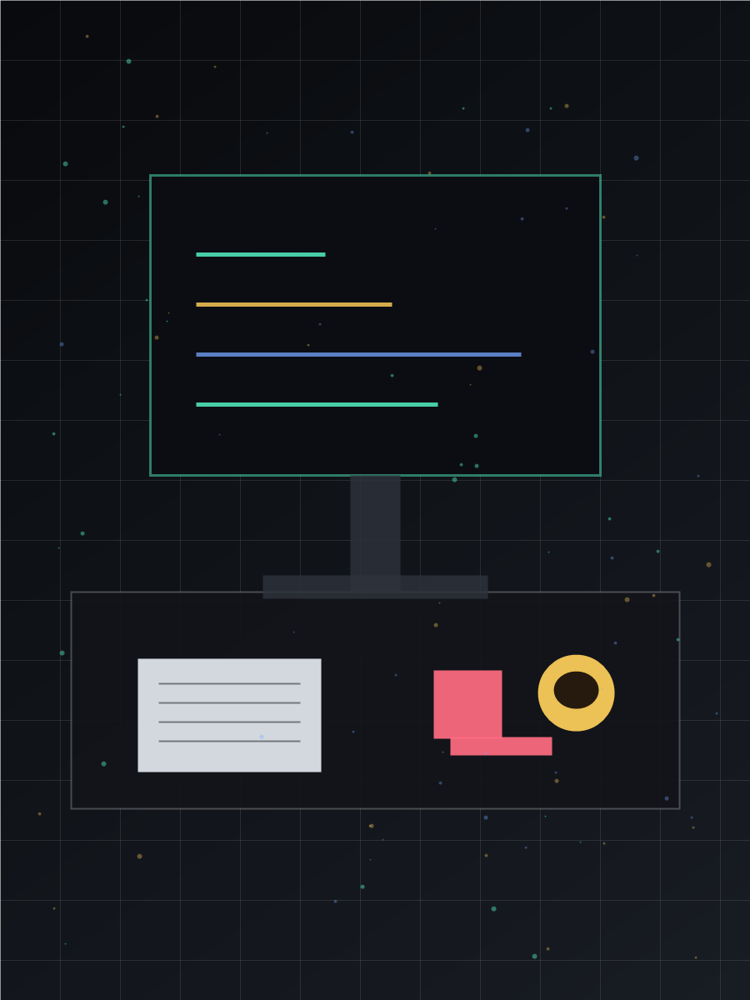

Creative Developer / Writer
你好，我是 Sam。这个博客记录我对前端工程、产品体验、独立创作和生活节奏的观察。 我喜欢把复杂问题拆开，把灵感留下来，也把踩过的坑写成可复用的路标。

Latest Writing
About
我相信好的表达会让工作更安静，也更有方向。平时我会写一些面向实践的文章： 如何组织一个前端项目、怎样做出不打扰用户的交互、以及怎样在长期创作中保持节奏。